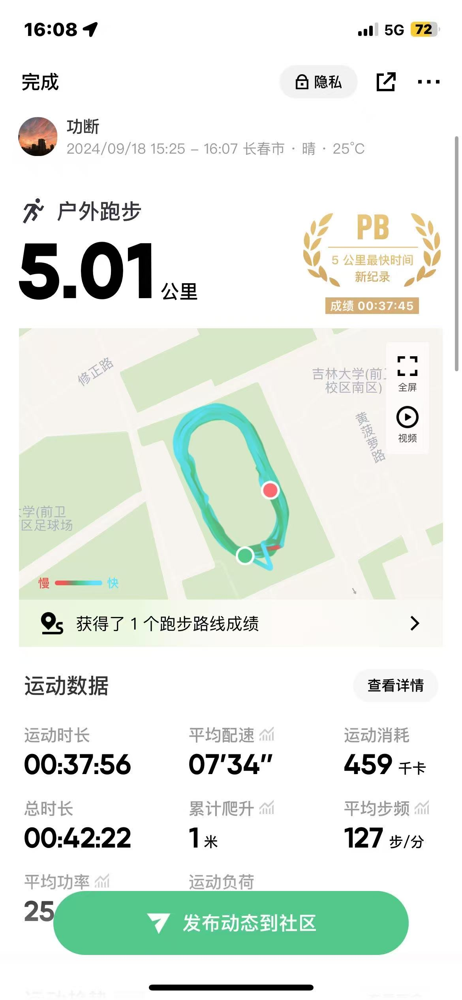

自我认知矩阵
你好！我是张辰。作为一名计算机学院的大二新生。当前掌握技术栈：
成长时间线
多维兴趣空间

技术哲思
编程之道
"代码如诗，简约而不简单。优雅的代码应该像清晨的第一缕阳光，简洁而富有力量。"
const elegantCode = (complexity) => {
return complexity.reduce(
(simple, problem) =>
simple.solve(problem)
);
}
成长札记
"技术的世界如同攀登高峰，每一步都是新的挑战，每一个bug都是成长的机遇。"
- 构建个人知识体系
- 践行敏捷开发理念
- 追求代码的艺术美感
未来畅想
"在人工智能与Web3.0的浪潮中，我们不仅是技术的使用者，更应该成为技术的创造者。"
全栈开发 →
系统架构 →
技术创新
class TechPhilosophy {
constructor() {
this.mindset = ['创新', '激情', '坚持'];
this.skills = new Set();
this.journey = [];
}
learn(technology) {
this.skills.add(technology);
this.journey.push({
milestone: technology,
date: new Date(),
reflection: '每一次学习都是一次成长'
});
}
innovate(problem) {
return this.mindset.reduce((solution, attitude) => {
return solution.enhance(attitude);
}, new Solution(problem));
}
async future() {
while(true) {
await this.learn('新技术');
this.innovate('新挑战');
yield '无限可能';
}
}
}